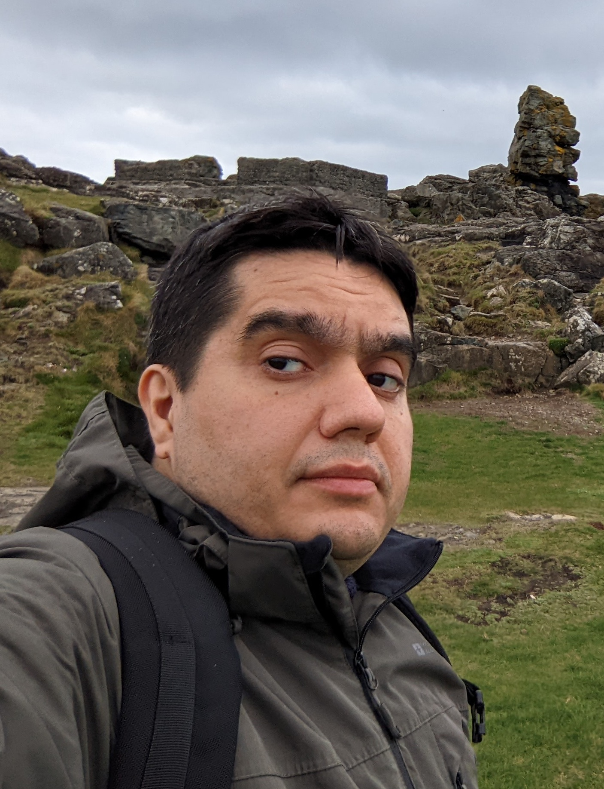

GHESHGHEREGH@GMAIL.COM
|  |
AboutI am a Staff Research Scientist at Google DeepMind. My research is focused on advancing the frontiers of AI and Machine Learning, particularly reinforcement learning and self-supervised learning. I have extensive knowledge and expertise in the field of AI, along with over 10 years of research and management experience in creating new AI technologies. |
Skills
|
Work History
|
As a Staff Research Scientist at DeepMind, I spearheaded a team of talented research scientists and engineers in developing multiple ground-breaking AI technologies. This journey resulted in key advancements in areas like fine-tuning generative AIs with AI-feedback, self-supervised learning, world models, exploration, and diffusion models. Notable projects include BLaDE, BYOL-Explore, and World Discovery Models, among others.
My contributions extended from the project ideation phase through to execution, leading to high-impact publications and patents. Some significant projects in this regard include Noisy Networks for Exploration, Neural Belief Representations, and Minimax RL.
Throughout my tenure, I had the privilege of collaborating with leading researchers on influential projects such as computer control with generative AI and Bootstrap-Graph representation Learning. This collaborative effort led to multiple well-cited publications, contributing to the broader AI and machine learning community.
As a Postdoctoral Fellow, I contributed to the publication of several peer-reviewed scientific papers for prestigious conferences such as NeurIPS and ICML. Notable works include 'A cryptography-based approach for movement decoding' and 'Convex Relaxation Regression'.
Radboud University Nijmegen | Nijmegen, Netherlands | October 2012
University of Tehran | Tehran, Iran
K N Toosi University of Technology | Tehran, Iran